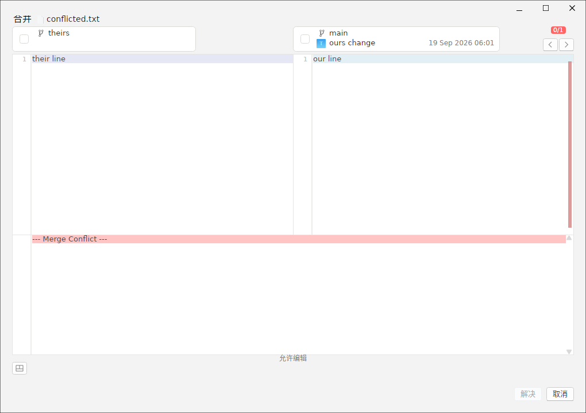
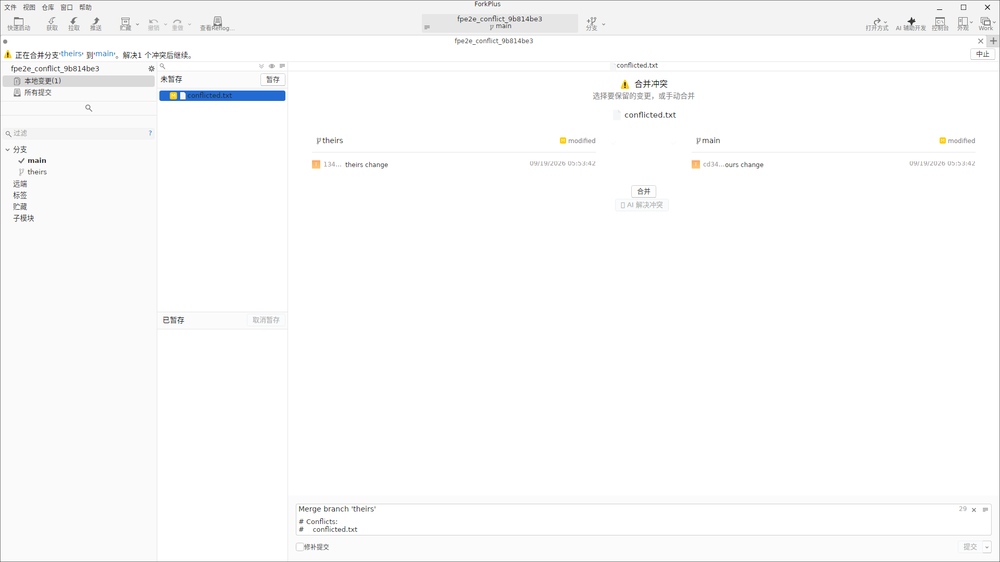
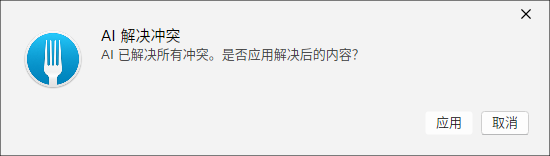
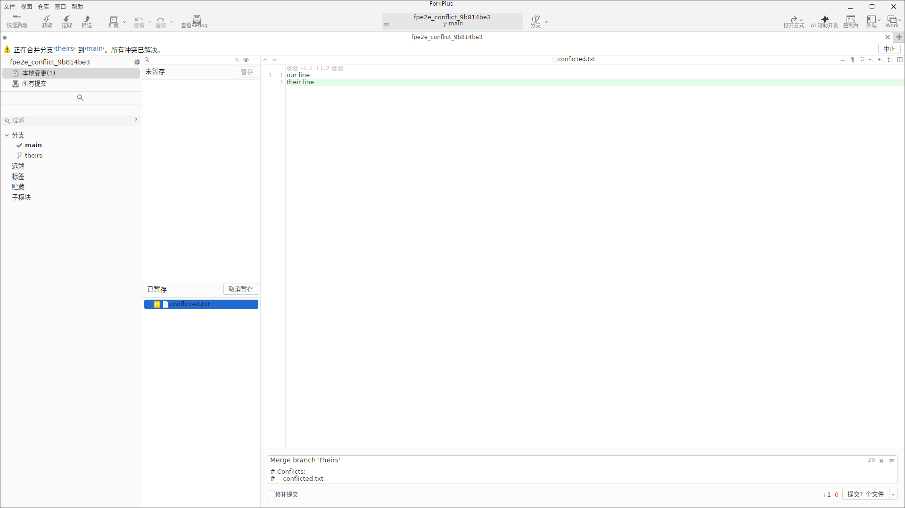

冲突视图
合并（或拉取、变基、应用 Stash）发生冲突时，ForkPlus 会在「变更与提交」视图中把冲突文件单独列出，并在选中后切入冲突视图。视图顶部提供两种版本（本地 与 远程 版本，即 --ours 与 --theirs）的勾选，以及一个「合并」按钮，用于直接选用某一侧或打开三方合并编辑器。
选择「仅远程版本」
当确认当前本地版本的改动不需要保留、只需采用远程侧的版本时，可只勾选「远程版本」。此时冲突视图会进入 Choose {theirs} 状态，随后执行的操作将把文件内容替换为所选的一侧。
三方合并编辑器
若需要更精细地逐行决定冲突取舍，点击「合并」会打开三方并排合并窗口。它并排展示「本地版本 / 合并结果 / 远程版本」三列：左侧与右侧分别是本地与远程的完整内容，中间一列是可编辑的合并结果。可以通过中间的合并编辑器逐项选择标记、增删行，最终形成既保留本地又纳入远程的最终文件。
三方窗口中原有的冲突标记（<<<<<<<、=======、>>>>>>>）会被解析为可逐块选择的冲突块；完成编辑后，ForkPlus 会应用合并结果并移除标记。

AI 辅助解决冲突
ForkPlus 可以借助 AI 自动合并冲突，免去逐块手动选择。使用前请先在「偏好设置 → AI」中配置 AI 检视服务地址、API 密钥与模型（即 AI 检视设置）。配置完成后，进入冲突视图即可看到 🤖 AI 解决冲突 按钮。
点击 AI 解决冲突 按钮，ForkPlus 会读取当前工作区中仍带冲突标记（<<<<<<< / ======= / >>>>>>>）的文件内容，连同文件清单发送给 AI，要求其智能合并两侧变更、保留非冲突上下文并去除所有标记。处理过程中按钮会进入忙碌状态并显示进度。

AI 返回合并结果后，ForkPlus 会先校验其中不再残留冲突标记，再弹出确认对话框，把「AI 已解决所有冲突。是否应用解决后的内容？」展示给你。

确认「应用」后，ForkPlus 会将 AI 生成的合并内容写回文件、暂存到索引并刷新冲突视图，冲突被解决。建议在应用后审阅最终内容再提交。
